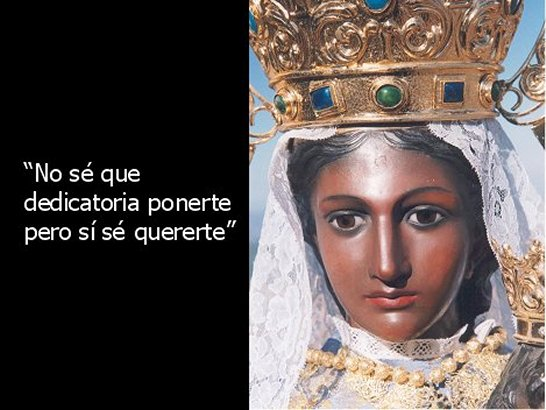
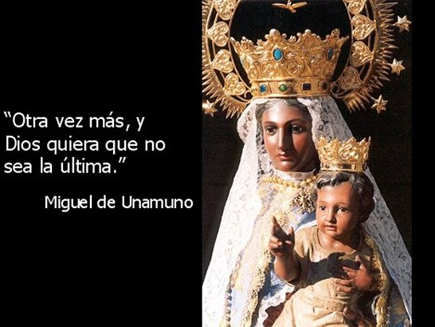
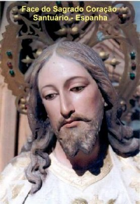
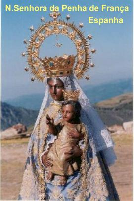
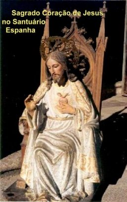

O ENCONTRO DA IMAGEM
NA ESPANHA
O Santuário de NOSSA SENHORA DA PENHA DE FRANÇA se encontra na Província de Salamanca, numa linda e formosa região: “de La Sierra de Francia” (da Serra de França). Ali, se ergue o Santuário Mariano, de onde se contempla uma esplendorosa e singular paisagem que abrange a imensa planície castelhana, as montanhas das Hurdes e a Serra Estrela de Portugal.
É uma linda e surpreendente história, que começa com a mensagem da VIRGEM a um monge francês em Paris, na França, para procurar e encontrar a sua imagem, a imagem da MÃE DE DEUS enterrada naquele local, transformando um Monte solitário na Espanha, num lugar de encontro das pessoas para a oração e exercício da espiritualidade, além de auferir o ensejo de contemplar uma magnífica e inesquecível paisagem.
O fato começou quando Simon (Simão) que estava dormindo em sua cela, recebeu com perfeita nitidez a mensagem de NOSSA SENHORA recomendando: “Simão vela e não durmas. Deverás ir a Penha de França, que se encontra em terras do ocidente e procurarás uma imagem feita em minha homenagem. Irá encontrá-la numa gruta, e lá, EU lhe direi o que fazer”.
Simão partiu de Paris em direção a Bretanha, alcançando os locais, onde hoje estão as cidades de Rennes e Nantes. Mas como não tinha uma orientação segura para onde se dirigir, andou por todas as partes e fez perguntas a diversas pessoas, buscando informações sobre o local “Peña de Francia”, indicado por NOSSA SENHORA. Mas ninguém conhecia tal local, e por isso, não estava conseguindo a orientação que lhe auxiliasse no projeto de procura da imagem.
Sentindo o desânimo envolver o seu coração, entrou numa Igreja e rezou ardorosamente. E então, ouviu novamente a voz da VIRGEM que lhe disse: “Simão, vela, não renuncie a sua santa peregrinação, que serás recompensado”.
Saiu da Igreja com renovada disposição, totalmente fortalecido no desejo de atender a MÃE DE DEUS. Partiu em direção a outros locais, onde hoje se encontram as cidades de Bordeaux e Toulouse, seguindo firme na sua busca. Até que certo dia, defronte a uma Igreja em Toulouse, viu uma movimentação de pessoas que articulavam uma peregrinação a Santiago de Compostela na Espanha, para visitar o túmulo do Apóstolo São Tiago Maior. Interessou-se pelo projeto e na companhia dos peregrinos, viajou para rezar diante do túmulo do Discípulo do SENHOR. Lá chegando, se prostrou e suplicou a preciosa ajuda de São Tiago, a fim de poder cumprir o desejo da MÃE DE DEUS. À noite, enquanto olhava a beleza do céu estrelado e fazia as suas orações num local ermo, próximo ao abrigo dos peregrinos, teve uma forte inspiração que lhe orientou seguir para Salamanca, quando no dia seguinte os peregrinos iam regressar a França. Cheio de entusiasmo se despediu dos companheiros de viagem e seguiu para Salamanca. La chegando, se acomodou e logo iniciou a sua busca, mas ninguém lhe dava uma informação concreta. Então decidiu mudar sua maneira de atuar, ao invés de procurar noticias no centro populoso, se deslocou para a periferia, nos bairros mais modestos e em lugarejos próximos, alcançando a pequena Vila Alba de Tormes. Neste local existia a Praça do Corillo onde habitualmente faziam a feira de mercadorias, e a movimentação de pessoas era muito intensa e o vozerio muito grande, pois cada um queria exibir melhor o seu produto, objetivando atrair os fregueses. E no meio daquela balburdia chegou aos seus ouvidos uma voz de mulher que gritava a plenos pulmões oferecendo a sua mercadoria: carvão vegetal feito aos pés da “Peña de Francia” . Os olhos de Simão brilharam intensamente. Com rapidez se deslocou em direção à mulher por que ela conhecia o local que ardentemente procurava. A senhora disse que morava no lugarejo de San Martin de Castañar, próximo a Tormes, e distante duas léguas (12 quilômetros) da “Peña”, onde numa pequena floresta preparava o seu carvão.
Simão seguiu para lá e empreendeu uma vigorosa busca, sempre se lembrando das palavras da VIRGEM: “Simão, vela e não durmas”. Na terceira noite, no meio de uma grande luz lhe apareceu NOSSA SENHORA, e lhe disse: “Na rocha onde se refugiou está a imagem. Ali irás cavar e vai encontrá-la, e a colocará numa Igreja que construirás no local mais elevado”.


Assim instruído, ele voltou ao povoado de San Martin em busca de ajuda. Quatro homens se apresentaram, imaginando que se tratava de um tesouro escondido, e por isso, logo se ofereceram para acompanhá-lo. Embaixo da rocha onde ele se abrigava, existia uma grande pedra que fechava a entrada de uma pequena caverna. Com muita dificuldade os homens conseguiram remover o bloco e logo cavaram o chão, encontrando a belíssima imagem da MÃE DE DEUS, com delicadíssimos traços e a pele negra, vestindo um manto azul celeste e trazendo nos braços o MENINO JESUS.
A notícia se espalhou rapidamente e o povo cristão logo se interessou em ajudar a fim de ser cumprido o desejo de NOSSA SENHORA. E por isso também, os nomes daqueles homens que ajudaram o piedoso monge francês Simon Rolán ficaram gravados na história do encontro da imagem. São eles: Pascual Sánchez, Juan Hernández, Benito Sánchez aquele que escreveu o acontecido e deu testemunho, e Anton Fernández. A VIRGEM quis que este encontro da sua imagem fosse acompanhado de prodígios inesquecíveis, e assim, carinhosamente dispensou um favor muito especial a cada um deles. Os quatro homens que eram frios na oração e viviam distantes de DEUS tiveram as suas existências transformadas, se tornaram fervorosos e se empenharam em estabelecer uma coerente relação de amizade com o SENHOR.
O fato do encontro da imagem aconteceu numa quarta-feira, dia 19 de Maio de 1434, quando reinava em Castela na Espanha Dom Juan II, e era Sumo Pontífice Romano, Sua Santidade o Papa Eugênio IV.
Com os donativos recebidos e a ajuda do povo, Simão construiu uma Capela na parte mais elevada do monte, cumprindo deste modo o desejo da VIRGEM MARIA. E NOSSA SENHORA recompensou e tem recompensado fartamente com a graça de DEUS, a fé de todos aqueles que se esforçaram a construir o Templo, assim como, todas as pessoas que fervorosamente vem visitá-la, rezando diante da sua imagem e suplicando o seu tão querido e precioso auxílio.
Todavia, a partir de 1835 a imagem da VIRGEM sofreu diversos sequestros, primeiro por moradores da redondeza que a queriam em suas casas, pelo menos durante um dia, e depois por outros que a sequestravam por mais dias, e nenhuma providência era suficientemente enérgica para debelar aquele sério problema. Até que em 17 de Agosto de 1872 a VIRGEM desapareceu de uma vez, sem deixar qualquer vestígio, e oculta permaneceu durante aproximadamente dezenove (19) anos, quando foi encontrada dentro de um saco, ao lado do portão de entrada da subida para a Igreja. Quando os Padres Dominicanos recolheram e examinaram a relíquia tiveram uma forte comoção, por que o estado da imagem era extremamente lamentável. Então contrataram o escultor Jacinto Bustos Vasallo que fez uma imagem bonita igual à primitiva, com maiores dimensões, e por recomendação dos Padres, deixou um espaço no seu interior onde acomodou a original, que pode ser vista por uma pequena janela que foi construída no peito da nova imagem.
A IMAGEM DE NOSSA SENHORA DA PENHA DE FRANÇA
Ela está com um vestido longo azul estampado com bordados de flores em ouro; na cabeça tem um véu branco rendado caindo sobre os ombros até a cintura. E tem também duas magníficas e exuberantes coroas de ouro e pedras preciosas, sendo uma a Coroa de Rainha e a outra vertical toda em ouro, com um brilho esplendoroso e é encimada por uma cruz, e ao seu redor existem doze estrelas e o ESPÍRITO SANTO no meio, todos em ouro reluzente. Suas mãos abraçam o MENINO JESUS e descendo de seus ombros, envolvendo o MENINO DEUS tem um lindo rosário, todo em ouro, com uma parte enrolada no pulso de sua mão esquerda. A fisionomia é delicada, com a pele negra e os olhos escuros, deixando sobressair à ternura de uma carinhosa expressão maternal, na sua face jovem e tranquila. O MENINO JESUS veste um camisolão dourado, tem uma coroa de ouro na cabeça e a sua mão esquerda está colocada sobre o coração e a mão direita mostra o dedo indicador ligeiramente saliente, como se estivesse convidando as pessoas a acolher a sua amizade e o seu Divino Amor.
O POVO DE DEUS ATENDEU O CONVITE
Os milagres continuaram a acontecer com frequência. O SENHOR, mostra a sua Divina presença por meio das muitas manifestações sobrenaturais através da intercessão maternal e eficaz de Sua DIVINA MÃE, fazendo com que a Igreja edificada no local da Capela se tornasse pequena para atender a demanda de tantos fieis. E assim, novas construções foram providenciadas e hoje existe um magnífico e belo Santuário dedicado a NOSSA SENHORA DA PENHA DE FRANÇA.
A história da “Peña de Francia” foi construída de modo lento, mas digno, graças à colaboração e o interesse de pessoas íntegras que no anonimato, com o seu trabalho pessoal e a ajuda financeira, permitiram um notável desenvolvimento dos projetos. Hoje, NOSSA SENHORA tem um lindo Santuário na Espanha, onde recebe todos os seus filhos que a visitam diariamente em busca de ternura, consolo, alívio e de sua inestimável e eficaz proteção.
O Santuário é administrado e conduzido pelos Padres Dominicanos Pregadores e todos os anos, a Festa da Santa é realizada no dia 8 de Setembro (Natividade de Maria).


